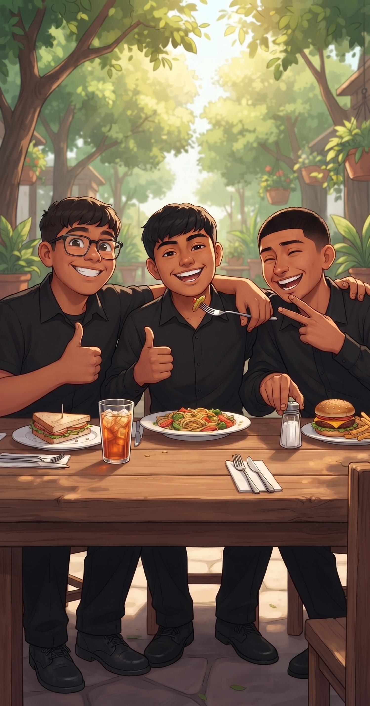

Después de salir de la clase de profe Ale los 3 chicos se fueron almorzar al comedor, después de almorazar Santi y Brandy se fueron a jugar volleyball pero Tomás no juega ya que la ex novia también juega con ellos y le cae muy mal entones Tomás se fue un rato a otro lado, ese día Santi mientras jugaba se dio cuenta que tenia unas admiradoras de contabilidad que lo se le quedaban viendo y aveces se metian a jugar con él desde es día Brandy se dio cuenta de que Santi tenia razón cuando decia que todas estaban enamoradas de él, cuando se acabo el almuerzo se volvieron a econtrar con Tomás y volvieron a clases
